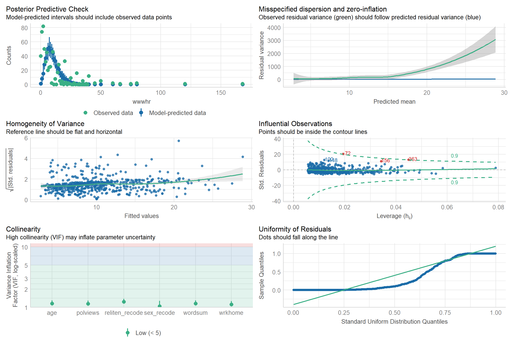
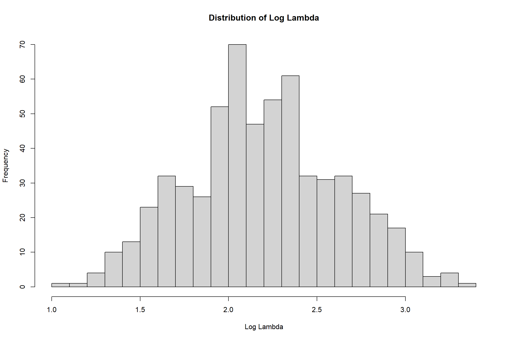

library(MASS)
library(tidyverse)
library(emmeans)
library(ggeffects)
library(easystats)
library(performance)
library(knitr)Lab 5 - Poisson - Questions
- To complete this lab:
- Load packages
- Download the dataset:
library(tidyverse)
data <- read_delim("https://raw.githubusercontent.com/jgeller112/psy504-advanced-stats/main/slides/Poisson/data/2010.csv")- Conduct the analysis described in the preregistration document
- The number of hours per week that a person spends on the Internet (“WWWHR”) will
be predicted by their vocabulary (“WORDSUM”), age (“AGE”), sex (“SEX”), religiosity
(“RELITEN”), political orientation (“POLVIEWS”), and how often they work from home
(“WRKHOME”).
- Let’s use the
naniarpackage’s functionreplace_with_nato clean the data.
library(naniar)
data_pos <- data %>%
dplyr::select(wwwhr, wordsum, age, sex, reliten, polviews, wrkhome) %>%
replace_with_na(.,
replace = list(wwwhr = c(-1, 998, 999),
wordsum = c(-1, 99),
reliten = c(0, 8, 9),
polviews = c(0, 8, 9),
wrkhome = c(0,8,9),
age=c(0, 98, 99)))Q: Can you explain what might be going on in the above code?
A: The 7 specified columns specified are chosen to put in a new df. Then for each of the columns, if an element is a certain value, it becomes NA
Q: The next step in data cleaning would be to ensure that the data in your code are aligned with the description/ usage context of the variables
- Recode sex and reliten as necessary
data_pos$sex_recode = as.factor(data_pos$sex)
data_pos$reliten_recode = as.factor(data_pos$reliten)Missingness
data_pos %>%
dplyr::select(reliten, reliten_recode)# A tibble: 2,044 × 2
reliten reliten_recode
<dbl> <fct>
1 1 1
2 4 4
3 1 1
4 1 1
5 1 1
6 4 4
7 3 3
8 1 1
9 1 1
10 1 1
# ℹ 2,034 more rowslibrary(skimr)
skimr::skim(data_pos)| Name | data_pos |
| Number of rows | 2044 |
| Number of columns | 9 |
| _______________________ | |
| Column type frequency: | |
| factor | 2 |
| numeric | 7 |
| ________________________ | |
| Group variables | None |
Variable type: factor
| skim_variable | n_missing | complete_rate | ordered | n_unique | top_counts |
|---|---|---|---|---|---|
| sex_recode | 0 | 1.00 | FALSE | 2 | -1: 1153, 1: 891 |
| reliten_recode | 99 | 0.95 | FALSE | 4 | 2: 747, 1: 707, 4: 363, 3: 128 |
Variable type: numeric
| skim_variable | n_missing | complete_rate | mean | sd | p0 | p25 | p50 | p75 | p100 | hist |
|---|---|---|---|---|---|---|---|---|---|---|
| wwwhr | 996 | 0.51 | 9.79 | 13.41 | 0 | 2 | 5 | 14 | 168 | ▇▁▁▁▁ |
| wordsum | 657 | 0.68 | 6.03 | 2.07 | 0 | 5 | 6 | 7 | 10 | ▁▃▇▅▂ |
| age | 3 | 1.00 | 47.97 | 17.68 | 18 | 33 | 47 | 61 | 89 | ▇▇▇▅▃ |
| sex | 0 | 1.00 | -0.13 | 0.99 | -1 | -1 | -1 | 1 | 1 | ▇▁▁▁▆ |
| reliten | 99 | 0.95 | 2.08 | 1.08 | 1 | 1 | 2 | 3 | 4 | ▇▇▁▂▃ |
| polviews | 71 | 0.97 | 4.08 | 1.46 | 1 | 3 | 4 | 5 | 7 | ▃▂▇▃▅ |
| wrkhome | 882 | 0.57 | 2.26 | 1.72 | 1 | 1 | 1 | 4 | 6 | ▇▁▁▂▁ |
Fit a Poisson model to the data.
library(lme4)
model_1 <- glm(wwwhr ~ age+ wordsum + sex_recode+reliten_recode+polviews+wrkhome , data = data_pos, family = poisson(link = "log")) Carry out model checking
Hint: performance package has the function you’re looking for
library(performance)
check_model(model_1)
Find any outliers
outlier_indices <- check_outliers(model_1)
data_cleaned <- data_pos %>%
filter(!row_number() %in% which(outlier_indices))Refit the model after excludint outliers
model_2 = glm(wwwhr ~ age+ wordsum + sex_recode+reliten_recode+polviews+wrkhome , data = data_cleaned, family = poisson(link = "log")) model_parameters(model_2) %>%
print_html()| Parameter | Coefficient | SE | 95% CI | z | p |
|---|---|---|---|---|---|
| (Intercept) | 1.75 | 0.08 | (1.59, 1.90) | 21.77 | < .001 |
| age | -0.02 | 1.09e-03 | (-0.02, -0.01) | -15.27 | < .001 |
| wordsum | 0.10 | 7.82e-03 | (0.09, 0.12) | 13.12 | < .001 |
| sex recode (1) | 0.25 | 0.03 | (0.20, 0.30) | 9.47 | < .001 |
| reliten recode (2) | 0.35 | 0.04 | (0.27, 0.42) | 9.30 | < .001 |
| reliten recode (3) | 0.41 | 0.06 | (0.28, 0.53) | 6.46 | < .001 |
| reliten recode (4) | 0.66 | 0.04 | (0.58, 0.74) | 16.77 | < .001 |
| polviews | -0.03 | 9.77e-03 | (-0.05, -0.01) | -3.35 | < .001 |
| wrkhome | 0.08 | 7.68e-03 | (0.06, 0.09) | 10.36 | < .001 |
Check for Overdispersion
Hint: performance package has the function you’re looking for
check_overdispersion(model_2)# Overdispersion test
dispersion ratio = 14.687
Pearson's Chi-Squared = 8694.538
p-value = < 0.001What do you notice? And what’s a good next step forward? There is overdispersion. We can try the negative binomial approach Can there be another model class that can fit the data? If so, fit this model to the data.
#data_cleaned <- data_cleaned %>%
# mutate(ID = row_number())
m.nb <- glm.nb(wwwhr ~ age+ wordsum + sex_recode+reliten_recode+polviews+wrkhome , data = data_cleaned) Which one is better- your earlier model, or later model?
We can see the negative binomial model works better
test_likelihoodratio(m.nb, model_2) %>%
kable()| Name | Model | df | df_diff | Chi2 | p | |
|---|---|---|---|---|---|---|
| m.nb | m.nb | negbin | 10 | NA | NA | NA |
| model_2 | model_2 | glm | 9 | -1 | 4586.015 | 0 |
What is zero inflation? Is there zero-inflation in your chosen model?
performance::check_zeroinflation(m.nb)# Check for zero-inflation
Observed zeros: 40
Predicted zeros: 67
Ratio: 1.68There is no zero inflation since observed zero < predicted zero Zero inflation is when the data has too many zeros, which biases the model.
# Compute log(lambda) (fitted values from the model)
log_lambda <- predict(m.nb, type = "link")
# Visualize log-lambda distribution
hist(log_lambda, breaks = 30, main = "Distribution of Log Lambda", xlab = "Log Lambda")
# Compute mean observed count
mean_count <- mean(data_pos$wwwhr, na.rm = TRUE)
mean_count[1] 9.788168Report your conclusions
The log lambda is normally distributed. Looking at the peak of the loglambda graph, exponentiate it exp(2.1)=8.17, which is similar to the mean count. That means the model fits well.